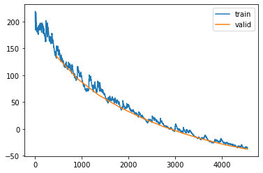
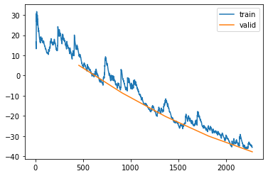

%load_ext autoreload
%autoreload 2Training First Release Candidate for Model
from meteo_imp.kalman.fastai import *
from meteo_imp.kalman.filter import *
from meteo_imp.utils import *
from meteo_imp.data import *
from meteo_imp.gaussian import *
from fastai.tabular.learner import *
from fastai.learner import *
from fastai.callback.all import *
from fastcore.foundation import L
from meteo_imp.kalman.fastai import show_results
import pandas as pd
import numpy as np
import torch
from sklearn.decomposition import PCAreset_seed()Hai Big
haiB = pd.read_parquet(hai_big_path)
hai_eraB = pd.read_parquet(hai_era_big_path)list(haiB.columns)['TA', 'SW_IN', 'VPD', 'PA', 'P', 'WS', 'LW_IN']len(haiB.columns)7dlsB = imp_dataloader(haiB, haiB, var_sel = list(haiB.columns), block_len=100, gap_len=15, bs=20, control_lags=[1], n_rep=5).cpu()modelB = KalmanFilterSR.init_local_slope_pca(len(haiB.columns),len(haiB.columns), df_pca = None, pred_only_gap=True, use_conditional=False)items = [dlsB.valid.items[i] for i in [10, 50, 100, 200, 300, 400]]learnB = Learner(dlsB, modelB, KalmanLoss(only_gap=True), cbs = [Float64Callback], metrics=rmse_gap)modelB.use_smooth = TruelearnB.fit(10, 1e-4)| epoch | train_loss | valid_loss | rmse_gap | time |
|---|---|---|---|---|
| 0 | 134.015954 | 135.600556 | 0.628895 | 06:58 |
| 1 | 115.225596 | 93.459149 | 0.509007 | 06:44 |
| 2 | 79.720830 | 62.963418 | 0.440769 | 06:44 |
| 3 | 42.315201 | 40.177393 | 0.398360 | 06:41 |
| 4 | 23.284302 | 21.069833 | 0.365034 | 06:47 |
| 5 | 10.878581 | 5.061856 | 0.337237 | 06:39 |
| 6 | 0.594195 | -8.622692 | 0.312828 | 06:29 |
| 7 | -12.917427 | -20.269316 | 0.292304 | 06:08 |
| 8 | -26.010804 | -30.028662 | 0.275892 | 06:07 |
| 9 | -35.443113 | -37.751035 | 0.261382 | 06:07 |
learnB.recorder.plot_loss()/home/simone/anaconda3/envs/data-science/lib/python3.10/site-packages/fastai/callback/core.py:69: UserWarning: You are shadowing an attribute (__class__) that exists in the learner. Use `self.learn.__class__` to avoid this
warn(f"You are shadowing an attribute ({name}) that exists in the learner. Use `self.learn.{name}` to avoid this")
# torch.save(learnB.model, "trained_2_feb_gap_all_var_v1.pickle")# learnB.export("trained_2_feb_gap_all_var_v1")model0_state = modelB.state_dict()model2 = torch.load("trained_2_feb_gap_all_var_v1.pickle")model2.use_conditionalFalse# model2 = KalmanFilterSR.init_local_slope_pca(len(haiB.columns),len(haiB.columns), df_pca = None, pred_only_gap=True, use_conditional=False)
# model2.load_state_dict(model0_state)
learn2 = Learner(dlsB, model2, KalmanLoss(only_gap=True), cbs = [Float64Callback], metrics=rmse_gap)learn2.fit(4, 1e-4)learnB.recorder.plot_loss()
show_results(learnB)from meteo_imp.data import control_mapwith only_gap_ctx(learnB, False):
display(show_results(learnB, items = items, control_map = control_map))/home/simone/anaconda3/envs/data-science/lib/python3.10/site-packages/fastai/callback/core.py:69: UserWarning: You are shadowing an attribute (__class__) that exists in the learner. Use `self.learn.__class__` to avoid this
warn(f"You are shadowing an attribute ({name}) that exists in the learner. Use `self.learn.{name}` to avoid this")KeyError: "None of [Index(['TA_ERA', 'SW_IN_ERA', 'VPD_ERA', 'PA_ERA', 'P_ERA', 'WS_ERA',\n 'LW_IN_ERA'],\n dtype='object')] are in the [columns]"